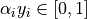

Manual¶
The Snap Machine Learning (Snap ML) Library is designed to offer fast training of generalized linear models. It currently supports the following machine learning models:
Linear Regression¶
RidgeRegression fits a linear model with coefficients  to minimize the residual sum
of squares between the predicted responses
to minimize the residual sum
of squares between the predicted responses  and the true labels
and the true labels  of the training data.
of the training data.
In order to prevent the model from overfitting ridge regression imposes an
 norm penalty on the size of the coefficients. Mathematically Ridge Regression
solves the following optimization problem:
norm penalty on the size of the coefficients. Mathematically Ridge Regression
solves the following optimization problem:

where ![X=[x_1,...,x_n]](_images/math/9c0a798752767edaed0c9798c6e730995a8e5b75.png) is the training data matrix with samples
is the training data matrix with samples ![\{x_i\}_{i\in [n]}](_images/math/7f5ec56efd11f6bb4c5619c7576bc3cb7e8635c2.png) in its columns and
in its columns and  are the corresponding labels. The regularization strength is controlled by the regularization parameter
are the corresponding labels. The regularization strength is controlled by the regularization parameter  ;
the larger
;
the larger  the more robust the model becomes to overfitting.
the more robust the model becomes to overfitting.
Note
In order to find an appropriate regularization parameter we recommend to perform cross validation.
Snap ML implements different variants of stochastic coordinate descent [SCD] and stochastic dual coordinate ascent [SDCA] as an algorithm to fit the model parameters  .
In order to optimally support GPUs for training Snap ML implements a parallel asynchronous version of these solvers especially designed to leverage the massive parallelism of modern GPUs [TPASCD17].
.
In order to optimally support GPUs for training Snap ML implements a parallel asynchronous version of these solvers especially designed to leverage the massive parallelism of modern GPUs [TPASCD17].
To train the RidgeRegression model the fit method is used; it takes the training data and the labels  as input and stores the learnt coefficients of the model in its
as input and stores the learnt coefficients of the model in its coef_ member function. The trained model can then be used to make predictions by calling the predict method on unlabeled data.
>>> from snap_ml import RidgeRegression
>>> import numpy as np
>>> reg = RidgeRegression(max_iter = 100, regularizer= 0.1)
>>> X_train = np.array([[0, 0], [1, 1], [2, 2]])
>>> y_train = np.array([0, 1, 2])
>>> reg.fit (X_train, y_train)
>>> reg.coef_
[ 0.495, 0.495]
>>> X_test = np.array([[3, 3], [0, 1]])
>>> reg.predict(X_test)
[2.97, 0.495]
For more details about the API we refer to the snap-ml-local API.
Support Vector Machine¶
Support Vector Machine (SVM) is a supervised learning method which can be applied for regression as well as classification.
Currently Snap ML implements SupportVectorMachine (SVMs) with a linear kernel function and offers
regularization to prevent the model from overfitting.
Mathematically it solves the following optimization problem:
![\underset{w}{\min\,} \sum_i [x_i^\top w - y_i]_+ +\frac \lambda 2 \|w\|_2^2](_images/math/e9aadf78fa6737ce29024abc8d3597335a679e8f.png)
where ![[u]_+=\max(u,0)](_images/math/07a7ad7bf78ce80c574857ce9a949a157eac470c.png) denotes the hinge loss with being the training samples and
denotes the hinge loss with being the training samples and  the corresponding labels. The regularization strength
the corresponding labels. The regularization strength  can be controlled by the user through the
can be controlled by the user through the regularizer parameter.
The larger the more robust the model becomes to overfitting.
Snap ML implements stochastic dual coordinate [SDCA] and the GPU optimized [TPASCD17] as an algorithm to train the SVM classifier. SDCA runs on the equivalent SVM dual problem formulation:

with the constraint .
To train the model the fit method is used; it takes the training data and the labels as input and stores the learnt coefficients of the model in its coef_ member function. The trained model can then be used to make predictions by calling the predict method on unlabeled data.
>>> from snap_ml import SupportVectorMachine
>>> import numpy as np
>>> reg = SupportVectorMachine(max_iter = 100, regularizer= 1.0)
>>> X_train = np.array([[0, 0], [1, 1], [2, 2]])
>>> y_train = np.array([-1,-1,1])
>>> reg.fit (X_train, y_train)
>>> reg.coef_
[ 0.25, 0.25]
>>> X_test = np.array([[3, 3], [0, 1]])
>>> reg.predict(X_test)
[1,-1]
A full example of training a SupportVectorMachine model in a real application can be found under Examples and for more details about the API we refer to the snap-ml-local API.
Logistic Regression¶
LogisticRegression is a linear model for classification. A logistic model is used to estimate the probability of an outcome based on the features of the input data. In order to prevent the model from overfitting regularization is implemented.
Mathematically Logistic Regression solves the following optimization problem composing of the logistic loss and an regularizer:
where is the training data matrix with samples in its columns and denote the corresponding labels.
The regularization strength is controlled by the regularization parameter ; the larger the more robust the model becomes to overfitting. can be specified by the user through the regularizer input parameter.
Snap ML implements stochastic coordinate descent [SCD] and stochastic dual coordinate ascent [SDCA] as an algorithm to fit the model parameters . In order to support GPU acceleration Snap ML implements a parallel asynchronous version of these solvers especially designed to leverage the massive parallelism of moderne GPUs [TPASCD17].
The model can be trained using the fit method which takes the training data and the labels as input and stores the coefficients of the learnt model in its coef_ attribute. This model can then be used to make predictions by calling the predict method on unlabeled data.
>>> from snap_ml import LogisticRegression
>>> import numpy as np
>>> lr = LogisticRegression(max_iter = 100, regularizer= 0.01)
>>> X_train = np.array([[0, 0], [1, 1], [2, 2]])
>>> y_train = np.array([-1,-1,1])
>>> lr.fit (X_train, y_train)
>>> lr.coef_
[0.145, 0.145]
>>> X_test = np.array([[3,3],[-2,1]])
>>> lr.predict(X_test)
[1,-1]
>>> lr.predict_proba(X_test)
[[0.295,0.705]
[0.536, 0.464]]
A full example of training a LogisticRegression model in Snap ML can be found here Examples and for more details about the API we refer to the snap-ml-local API.
References¶
| [SCD]: | Y. Nesterov. Efficiency of coordinate descent methods on huge-scale optimization problems. SIAM Journal on Optimization, 2012. |
|---|---|
| [SDCA]: | Shai Shalev-Shwartz and Tong Zhang. Stochastic Dual Coordinate Ascent Methods for Regularized Loss Minimization. Journal of Machine Learning Research, 2013. |
| [TPASCD17]: | Thomas Parnell, Celestine Dünner, Kubilay Atasu, Manolis Sifalakis, and Haris Pozidis. Large-Scale Stochastic Learning using GPUs. IEEE International Parallel and Distributed Processing Symposium Workshops (IPDPSW), 2017. |